Setup & Instructions
Welcome to JetWages — your tool to track and understand complex cabin crew wages. Follow these steps to set up the app and monitor your pay accurately.
Quick Setup
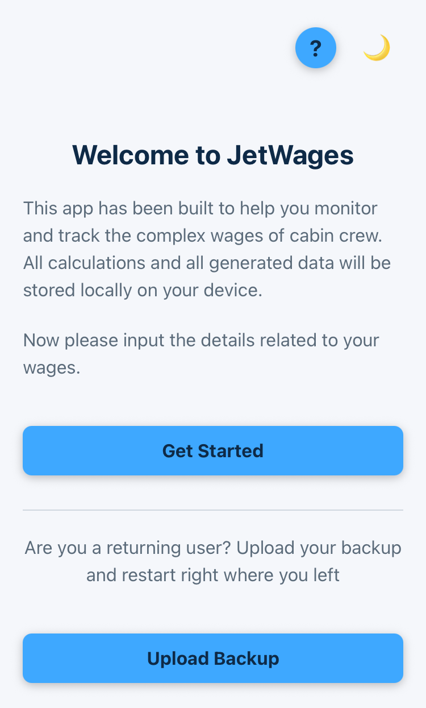
1. Welcome
- Tap Get Started to begin setup.
- Optional: Tap Upload Backup if you are restoring previous data.
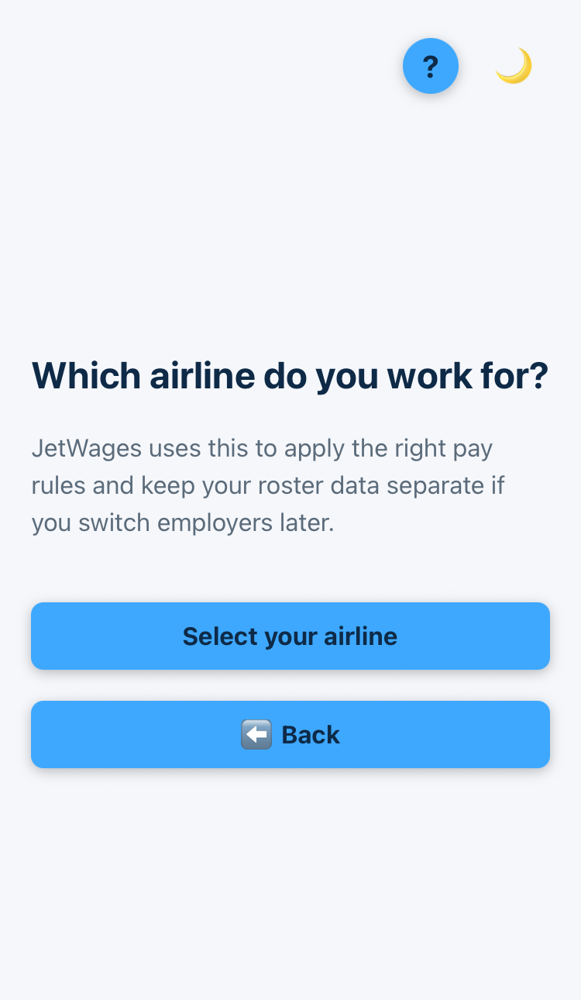
2. Airline
JetWages uses your airline to apply the correct pay rules.
- Tap Select your airline and choose your airline.
- Use Back if you need to return to the welcome screen.
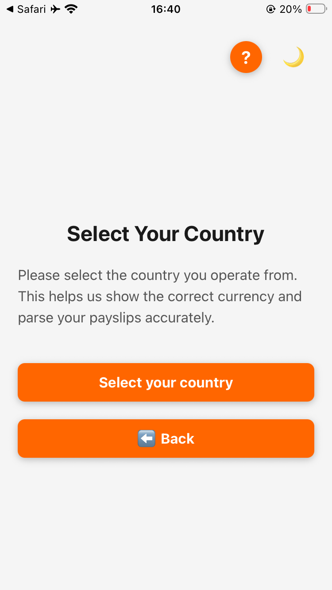
3. Country
Your country controls currency display and how payslips are read.
The app theme will automatically adjust to match your airline's colour scheme. Can be changed later in settings.
- Tap Select your country and pick the country you operate from.
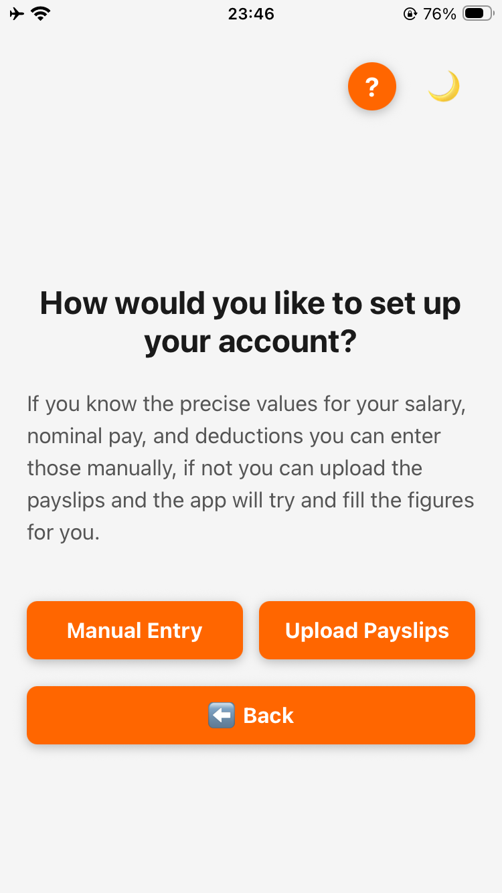
4. Setup method
Choose how to enter salary details:
- Manual Entry — if you already know basic pay, nominal pay, and deductions.
- Upload Payslips — let the app extract figures from PDF payslips (steps below follow this path).

5. Upload your payslip
- Tap Select PDF File.
- Choose a monthly payslip PDF from your device.
- Wait while the app extracts salary information.

6. Review core salary
Confirm the values extracted from your payslip (or edit them):
- Monthly Basic Pay
- Language Pay (optional)
- Pension Contribution (%) (optional)
- Tap Next: Review Benefits, then keep only pre-tax benefits that apply to you.
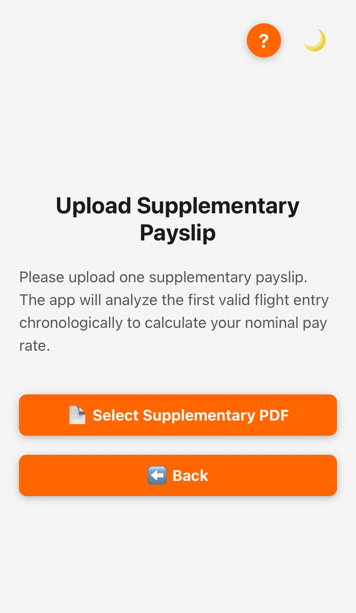
7. Upload a supplementary payslip
The app analyses the first valid flight entry chronologically to calculate your nominal pay rate.
- Tap Select Supplementary PDF.
- Pick a supplementary payslip that includes flight pay data.
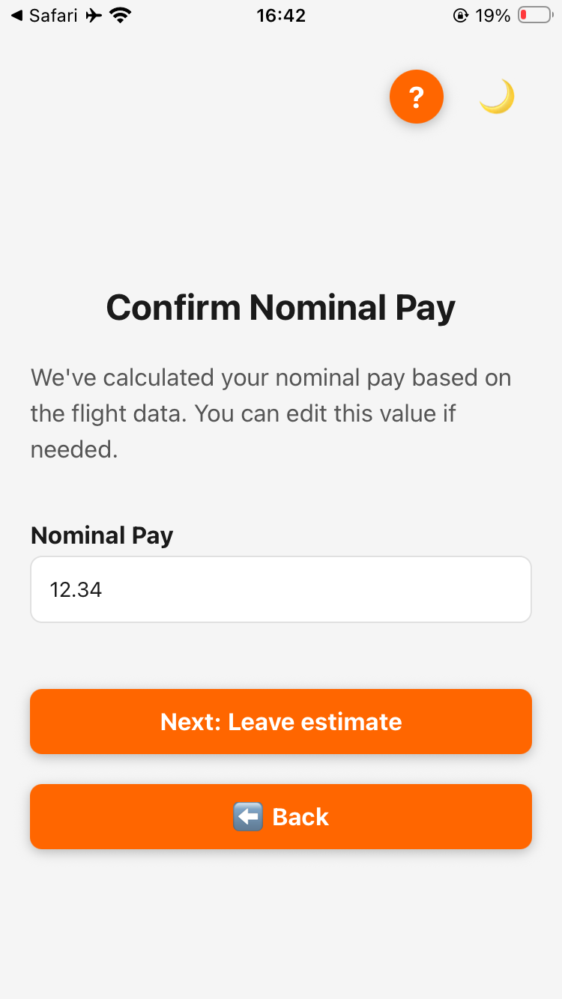
8. Confirm nominal pay
- Review the calculated Nominal Pay value.
- Edit it if needed.
- Tap Next: Leave estimate.
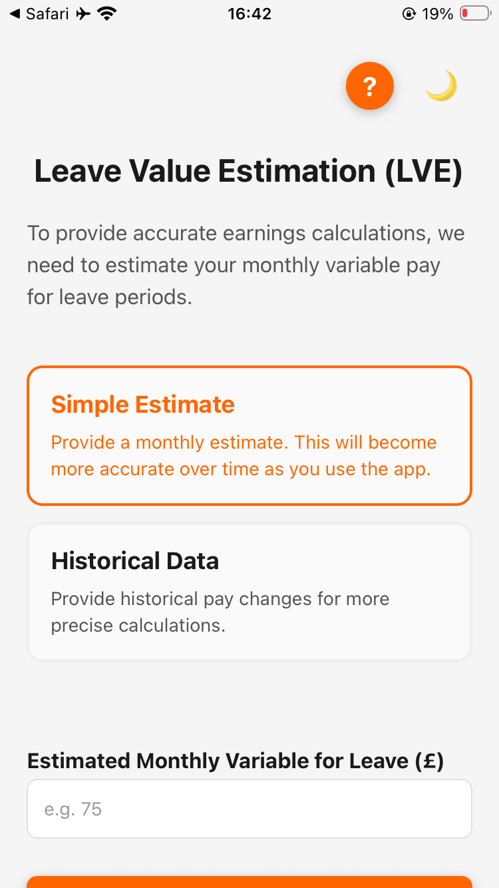
9. Leave Value Estimation (LVE)
Choose how JetWages should estimate variable pay during leave:
- Simple Estimate — enter a monthly figure (for example £75). This improves as you use the app.
- Historical Data — upload past schedules and supplementary payslips for a more precise figure (next step).
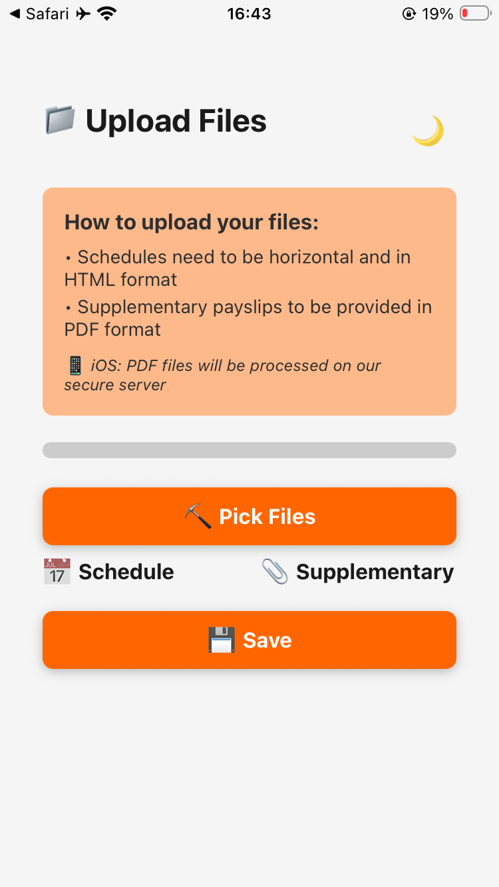
10. Historical files (optional path)
If you chose Historical Data, upload files here:
- Schedules must be horizontal HTML exports from eCrew.
- Supplementary payslips must be PDF.
- Tap Pick Files, select schedules and payslips together, then Save.
- On iOS, PDFs are processed on JetWages’ secure server.
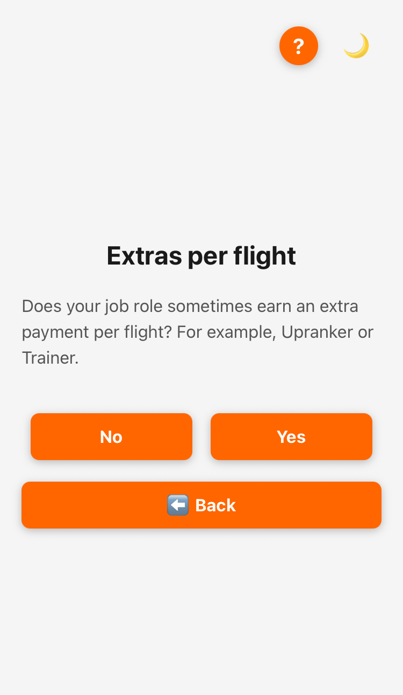
11. Extras per flight
Some roles earn an extra payment per flight (for example Upranker or Trainer).
- Tap Yes if this applies, then add the extra type and amount when prompted.
- Tap No if it does not.
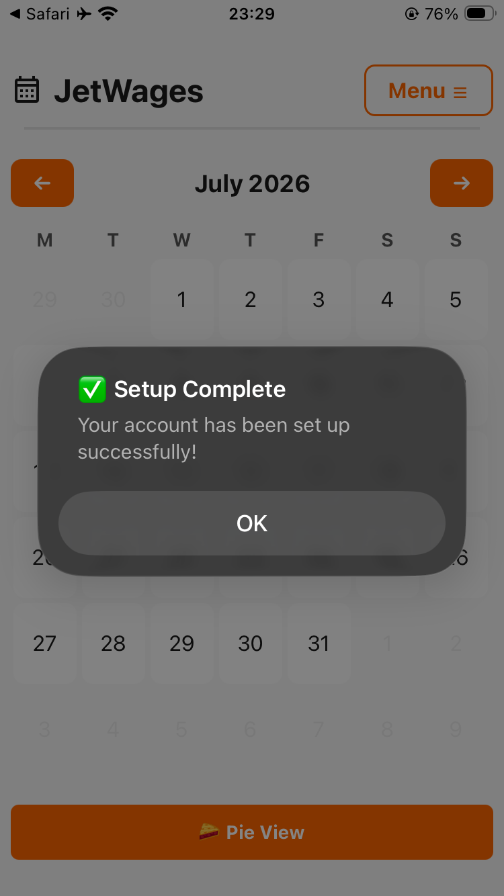
12. Setup complete
- You’ll see a Setup Complete confirmation over the home calendar.
- Tap OK to start using JetWages.
Note: If a PDF step fails, use Manual Entry (or enter values by hand when offered) and continue.
You’re ready to go. Use the How to Use tab to import your roster and edit duties.
1. What to prepare
This tab is mainly for anyone using Historical Data during Leave Value Estimation (and for gathering eCrew HTML files before you import them). Most people can go straight to Quick Setup.
If you want the most accurate leave estimate, gather:
- Your monthly roster files from eCrew (HTML, horizontal view)
- Your monthly payslip PDF (for salary setup)
- Your supplementary payslips PDF (for nominal pay and leave accuracy)
2. Download your eCrew roster (HTML)
- Log in to eCrew
- Open your schedule
- Switch to Horizontal View in My Preferences
- Use the export icon and choose HTML format

Orientation settings
Set Orientation to Horizontal under Schedule Print Options.
Important: Some users report eCrew does the opposite of the selected setting — double-check your export!

Export your roster
Use the export icon and choose HTML. Save the file for import in JetWages (Menu → Upload Calendar, or during historical leave setup).
3. File tips
- Select all related HTML schedules and PDF Supplementary Payslips in one go when uploading historical files — this reduces missing data.
- After setup, you can also sync duties from your device calendar (see How to Use).
- On iOS, PDF processing for uploads may use JetWages’ secure server; other data stays on your device.
When your files are ready, follow Quick Setup in the app.
Home calendar
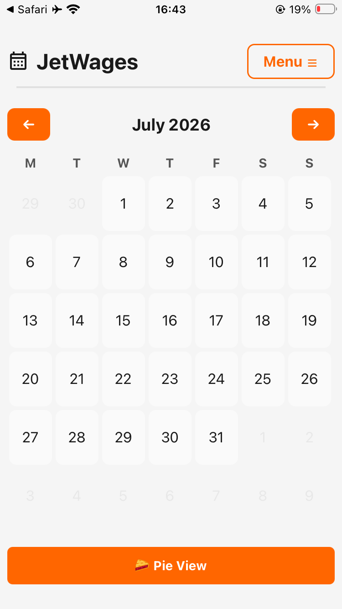
Your month at a glance
After setup you land on the home calendar. Use the orange arrows to change month, open Menu for tools and settings, and tap Pie View for a pay breakdown.

Select a day
Tap a date to open the day actions:
- Edit — change duties and flights
- Sales — record onboard sales
- Extras — add delay pay, night stop, uprank, and similar payments
You can switch light/dark theme from the moon control during setup, or via settings once you are on the home screen.
Import your roster
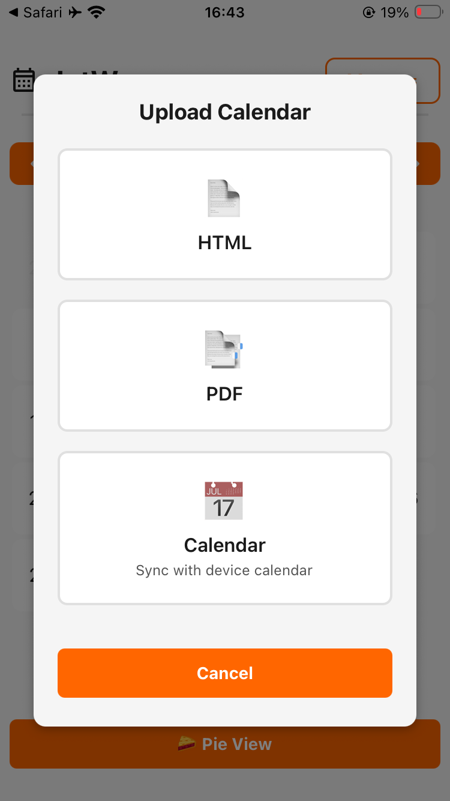
Upload Calendar
From Menu, open Upload Calendar and choose a source:
- HTML — eCrew horizontal HTML export
- PDF — roster PDF where supported
- Calendar — sync with your device calendar
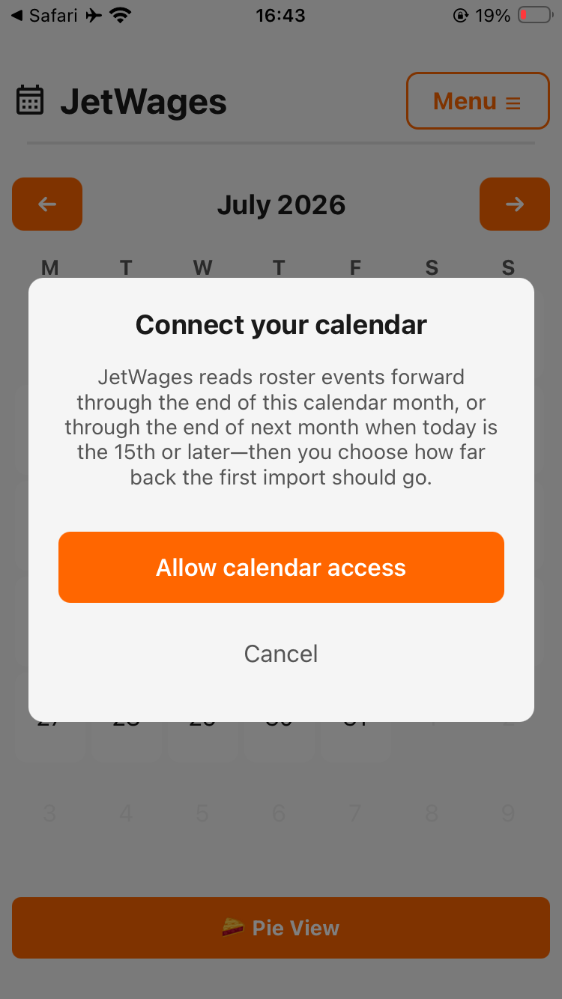
Calendar permissions
If you choose device calendar sync, JetWages asks to connect. It reads roster events forward through the end of this month (or next month when today is the 15th or later), then you choose how far back the first import should go.
- Tap Allow calendar access to continue.

Populated calendar
Duties appear as icons on each day (for example flights, standby, days off, or leave). Tap any day to review or edit details.
Edit a day
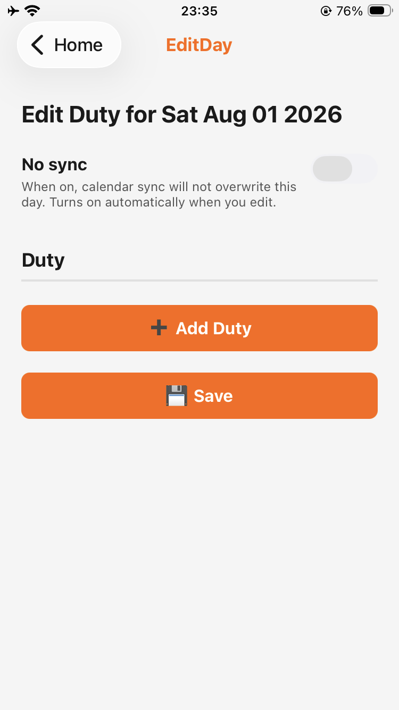
EditDay
From a selected day, tap Edit. Use + Add Duty to build the day, then Save.
Turn on No sync so calendar sync will not overwrite that day (it turns on automatically when you edit).
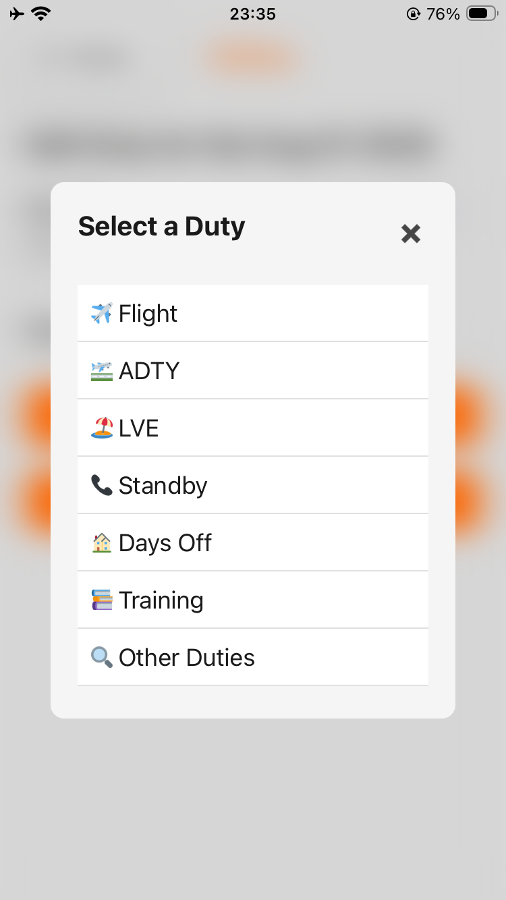
Select a duty type
Choose the duty that matches the day:
- Flight, ADTY, LVE, Standby, Days Off, Training, or Other Duties
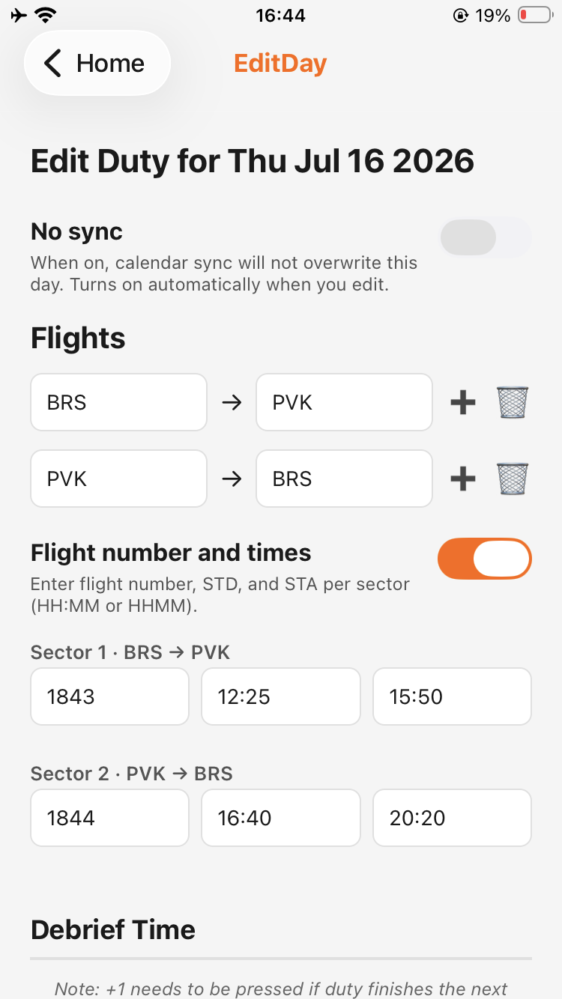
Flight sectors
For flight duties, add each sector with origin and destination airport codes. Optionally enable Flight number and times to enter STD/STA per sector.
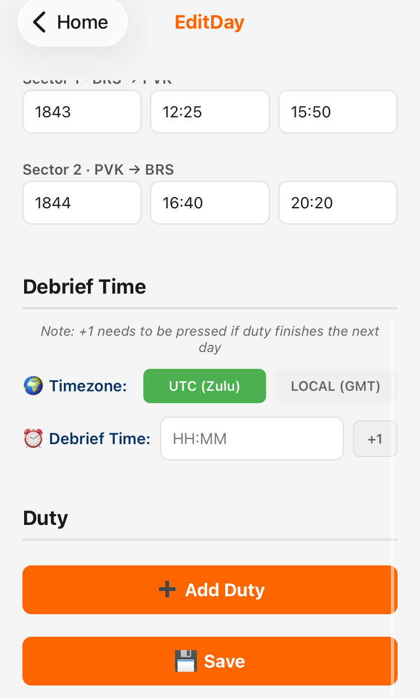
Times and debrief
Set timezone (UTC or local) and debrief time. Use +1 if duty finishes the next day.
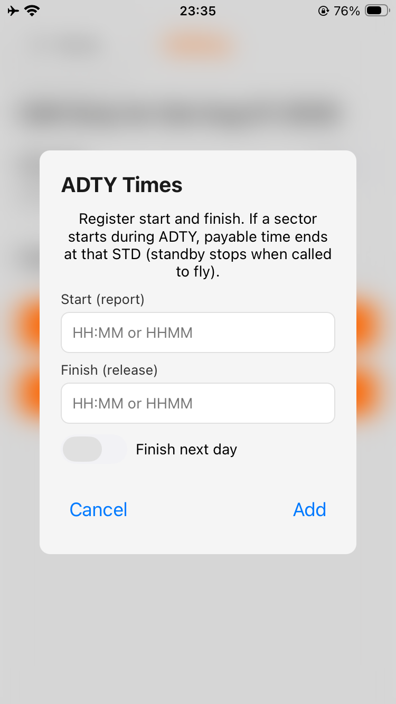
ADTY times
For ADTY, register start (report) and finish (release). If a sector starts during ADTY, payable standby ends at that STD. Use Finish next day when needed.
Sales & extras

Add sales
Enter total sales and crew count. Use + Add another sales figure if an aircraft swap changed crew count during the day — each figure is paid on its own crew count and commissions are added together.
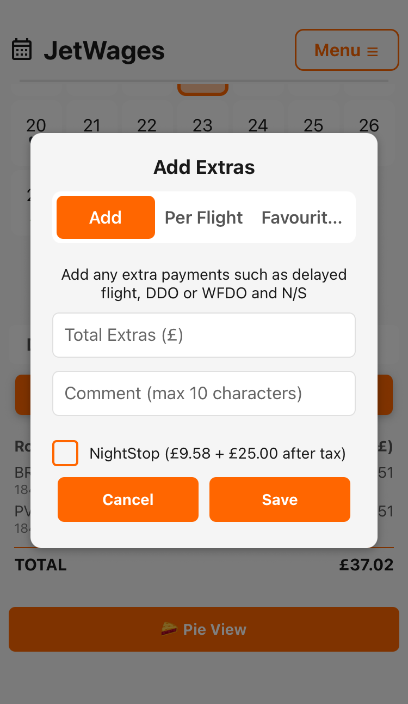
Add extras
On the Add tab, enter one-off extras such as delayed flight pay, DDO/WFDO, or night stop. Add a short comment, then Save.

Per-flight extras
On the Per Flight tab, add roles such as Uprank. Choose whether it applies to all flights that day or only some, then save. Favourites keep frequently used extras handy.
Pie View
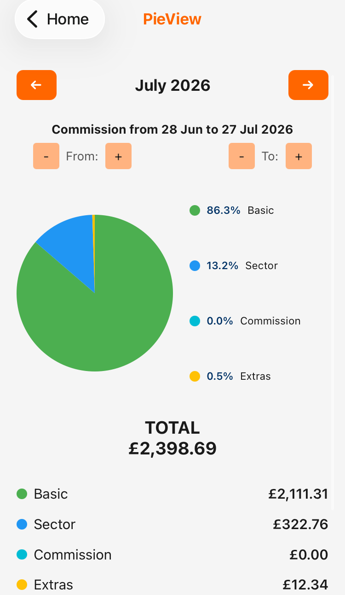
Monthly breakdown
Open Pie View from the home screen to see Basic, Sector, Commission, and Extras as a share of the month. Adjust the date range with the From/To controls if needed.
You’re ready to go. Enjoy tracking your wages with JetWages.